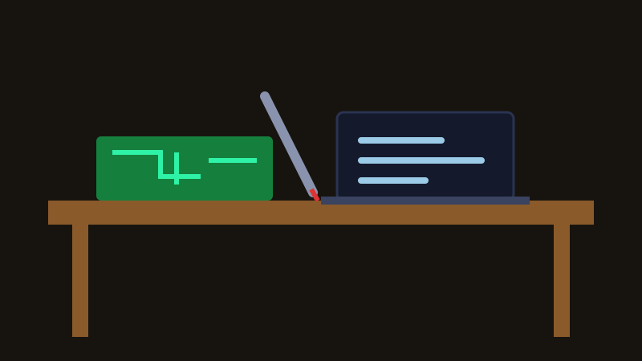

Sandbox
Workshopová dílna · Dílny

Dílna se stoly, nářadím a počítači. Tady se nesedí a neposlouchá – tady se pájí, programuje a staví. Místa je nutné si předem rezervovat.
Přístupnost
Bezbariérový přístup
Ano
Indukční smyčka
Ne
Bezbariérový vstup, dva výškově nastavitelné pracovní stoly.
Program scény (10)
Pátek 4. 6. · Zapojení
do
První pájení: postav si blikající placku
Sandbox · Dílna Pájka
do
Kreativní kódování: nakresli obraz programem
Sandbox · Alžběta Nováčková
do
Git bez slz
Sandbox · Robin Vacula
Sobota 5. 6. · Plný výkon
do
Robot z micro:bitu
Sandbox · Jakub Tesařík
do
Prompty, které fungují
Sandbox · Nikola Šafránková
do
Capture the Flag pro začátečníky
Sandbox · Petr Luňáček
do
První mobilní aplikace za dvě hodiny
Sandbox · Wanjiru Kamau-Stein
Neděle 6. 6. · Rodinná neděle
do
Rodinná dílna: světelný brouk
Sandbox · Dílna Pájka, Jakub Tesařík
do
Generativní plakát: kód jako štětec
Sandbox · Katja Zimmerlin, Alžběta Nováčková
do
Přístupný formulář krok za krokem
Sandbox · Jonáš Vrbata, Emre Kahraman